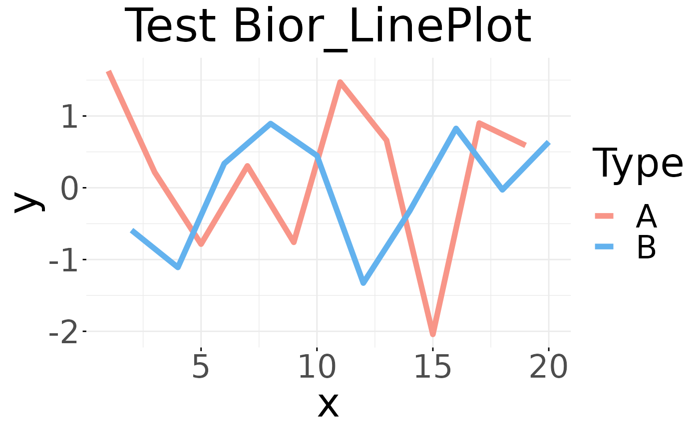
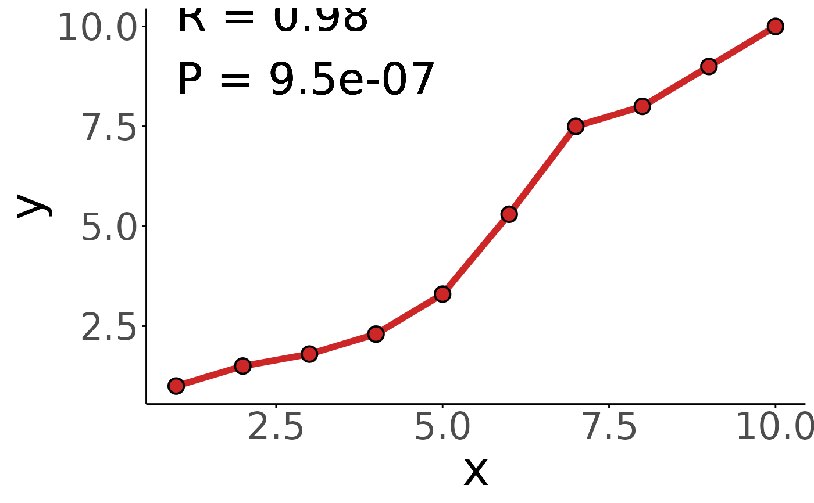

Bior_LinePlot.RdCreate a line plot.
Bior_LinePlot(
data,
x,
y,
group = 1,
numeric.x.axis = FALSE,
combine = FALSE,
merge = FALSE,
color = "black",
palette = NULL,
linetype = "solid",
plot_type = c("b", "l", "p"),
size = 0.5,
shape = 19,
stroke = NULL,
point.size = size,
point.color = color,
title = NULL,
xlab = NULL,
ylab = NULL,
facet.by = NULL,
panel.labs = NULL,
short.panel.labs = TRUE,
select = NULL,
remove = NULL,
order = NULL,
add = "none",
add.params = list(),
error.plot = "errorbar",
label = NULL,
font.label = list(size = 11, color = "black"),
label.select = NULL,
repel = FALSE,
label.rectangle = FALSE,
show.line.label = FALSE,
position = "identity",
ggtheme = theme_pubr(),
title.hjust = 0.5,
text.size = 20,
alternative = "two.sided",
method = "pearson",
exact = NULL,
conf.level = 0.95,
continuity = FALSE,
cor.test = FALSE,
R.digits = 2,
P.digits = 2,
cor.label.x = 1,
cor.label.y = 1,
cor.label.size = 10,
...
)a data frame
x and y variables for drawing.
grouping variable to connect points by line. Allowed values are 1 (for one line, one group) or a character vector specifying the name of the grouping variable (case of multiple lines).
logical. If TRUE, x axis will be treated as numeric. Default is FALSE.
logical value. Default is FALSE. Used only when y is a vector containing multiple variables to plot. If TRUE, create a multi-panel plot by combining the plot of y variables.
logical or character value. Default is FALSE. Used only when y is a vector containing multiple variables to plot. If TRUE, merge multiple y variables in the same plotting area. Allowed values include also "asis" (TRUE) and "flip". If merge = "flip", then y variables are used as x tick labels and the x variable is used as grouping variable.
line colors.
the color palette to be used for coloring or filling by groups. Allowed values include "grey" for grey color palettes; brewer palettes e.g. "RdBu", "Blues", ...; or custom color palette e.g. c("blue", "red"); and scientific journal palettes from ggsci R package, e.g.: "npg", "aaas", "lancet", "jco", "ucscgb", "uchicago", "simpsons" and "rickandmorty".
line type.
plot type. Allowed values are one of "b" for both line and point; "l" for line only; and "p" for point only. Default is "b".
Numeric value (e.g.: size = 1). change the size of points and outlines.
point shapes.
point stroke. Used only for shapes 21-24 to control the thickness of points border.
point size.
point color.
plot main title.
character vector specifying x axis labels. Use xlab = FALSE to hide xlab.
character vector specifying y axis labels. Use ylab = FALSE to hide ylab.
character vector, of length 1 or 2, specifying grouping variables for faceting the plot into multiple panels. Should be in the data.
a list of one or two character vectors to modify facet panel labels. For example, panel.labs = list(sex = c("Male", "Female")) specifies the labels for the "sex" variable. For two grouping variables, you can use for example panel.labs = list(sex = c("Male", "Female"), rx = c("Obs", "Lev", "Lev2") ).
logical value. Default is TRUE. If TRUE, create short labels for panels by omitting variable names; in other words panels will be labelled only by variable grouping levels.
character vector specifying which items to display.
character vector specifying which items to remove from the plot.
character vector specifying the order of items.
character vector for adding another plot element (e.g.: dot plot or error bars). Allowed values are one or the combination of: "none", "dotplot", "jitter", "boxplot", "point", "mean", "mean_se", "mean_sd", "mean_ci", "mean_range", "median", "median_iqr", "median_hilow", "median_q1q3", "median_mad", "median_range"; see ?desc_statby for more details.
parameters (color, shape, size, fill, linetype) for the argument 'add'; e.g.: add.params = list(color = "red").
plot type used to visualize error. Allowed values are one of c("pointrange", "linerange", "crossbar", "errorbar", "upper_errorbar", "lower_errorbar", "upper_pointrange", "lower_pointrange", "upper_linerange", "lower_linerange"). Default value is "pointrange" or "errorbar". Used only when add != "none" and add contains one "mean_*" or "med_*" where "*" = sd, se, ....
the name of the column containing point labels. Can be also a character vector with length = nrow(data).
a list which can contain the combination of the following elements: the size (e.g.: 14), the style (e.g.: "plain", "bold", "italic", "bold.italic") and the color (e.g.: "red") of labels. For example font.label = list(size = 14, face = "bold", color ="red"). To specify only the size and the style, use font.label = list(size = 14, face = "plain").
can be of two formats:
a character vector specifying some labels to show.
a list containing one or the combination of the following components:
top.up and
top.down: to display the labels of the top up/down points. For
example, label.select = list(top.up = 10, top.down = 4).
criteria: to filter, for example, by x and y variabes values, use
this: label.select = list(criteria = "`y` > 2 & `y` < 5 & `x` %in%
c('A', 'B')").
a logical value, whether to use ggrepel to avoid overplotting text labels or not.
logical value. If TRUE, add rectangle underneath the text, making it easier to read.
logical value. If TRUE, shows line labels.
Position adjustment, either as a string naming the adjustment
(e.g. "jitter" to use position_jitter), or the result of a call to a
position adjustment function. Use the latter if you need to change the
settings of the adjustment.
function, ggplot2 theme name. Default value is theme_pubr(). Allowed values include ggplot2 official themes: theme_gray(), theme_bw(), theme_minimal(), theme_classic(), theme_void(), ....
(defaut: title.hjust = 0.5); title hjust value
(defaut: text.size = 20); text size value
indicates the alternative hypothesis and must be
one of "two.sided", "greater" or "less". You
can specify just the initial letter. "greater" corresponds
to positive association, "less" to negative association.
a character string indicating which correlation
coefficient is to be used for the test. One of "pearson",
"kendall", or "spearman", can be abbreviated.
a logical indicating whether an exact p-value should be
computed. Used for Kendall's \(\tau\) and
Spearman's \(\rho\).
See ‘Details’ for the meaning of NULL (the default).
confidence level for the returned confidence interval. Currently only used for the Pearson product moment correlation coefficient if there are at least 4 complete pairs of observations.
logical: if true, a continuity correction is used for Kendall's \(\tau\) and Spearman's \(\rho\) when not computed exactly.
(defaut: cor.test = FALSE); whether to use cor.test to calculate correlations
(defaut: R.digits = 2); digits for R
(defaut: P.digits = 2); digits for P
(defaut: cor.label.x = 1); cor.label x position
(defaut: cor.label.y = 1); cor.label y position
(defaut: cor.label.size=10); cor.label size
other arguments to be passed to geom_dotplot.
A ggplot object
ggline
# Examples 1
data <- data.frame('x' = c(1:20), 'y' = rnorm(20), 'Type' = rep(c('A','B'), 10))
palette <- c("#f89588","#63b2ee")
Bior_LinePlot(data, x = "x", y = "y", color = "Type", title = "Test Bior_LinePlot",
palette = palette, plot_type = "l", size = 2, text.size = 30,
ggtheme = theme_minimal()) +
font("title", size = 35)

# Examples 2
data <- data.frame('x' = c(1:10), 'y' = c(1,1.5,1.8,2.3,3.3,5.3,7.5,8,9,10))
Bior_LinePlot(data, x = "x", y = "y",
color = "firebrick3", plot_type = "l", size = 2,
cor.test = TRUE, cor.label.x=1, cor.label.y=9, R.digits = 2, P.digits = 2,
cor.label.size = 10,
text.size = 30, ggtheme = theme_classic()) +
geom_point(color="black", fill="firebrick3", shape=21, size=4, stroke=1) +
font("title", size = 30)
